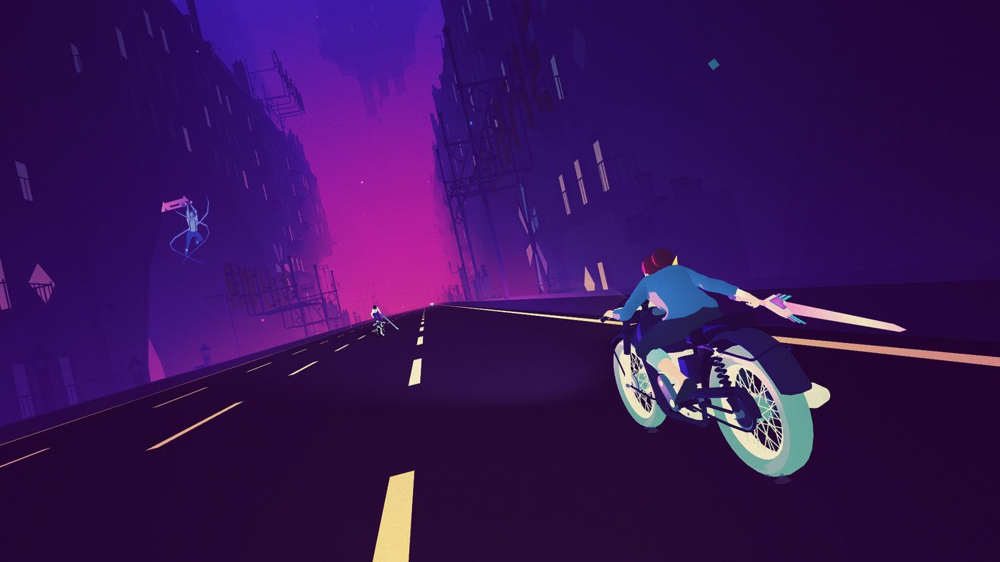

Why Sayonara Wild Hearts is one of my favourite things ever
How one little game always brings me back into my groove
21/02/2026
2020 was the worst year of my life, as I'm sure it was for many. For me specifically - it represented a dashing of a newfound adult freedom that I'd struggled so desperately to find my entire childhood. It was a year of being kicked down by those I loved even when I thought it couldn't get any worse. It was a year of rock bottom, and a year of heartbreak.
But said lowest points ended up pushing me forward, as if it was some momentum-based glitch. Pushing me down on the hard concrete surface of reality, and rather than cracking through to the depths, I slid off in a completely different direction. The worst year of my life, but also the start of my new life - where I used said heartbreak to find new people, new passions, new strengths.
Throughout those darkest moments, there was one game I kept coming back to: night after night, sunrise after sunrise, sadness after sadness; that game was Sayonara Wild Hearts. Released by Simogo late in the previous year, this was a game that I immediately resonated with and thought was a really nice vibe, beautiful art direction, spectacular music... and that was it for a while. It wasn't until the following year that I came back to the game, over and over, with some kind of renewed feeling... which I'm going to try and put into words right now.
Sayonara Wild Hearts is a playable synth pop album - a brief romp through a gorgeous neon highway with a nebulous story of a woman facing her heartbreak with the power of the major arcana. It’s an aesthetic tour-de-force: an absolute visual and sonic masterpiece that is constantly moving and flowing from song to song.
If you have not played the game… please read no further and just dive in.
On a first play through, each song is presented as a level, with gameplay that is truly little more than a heavily scripted auto-runner with very, very occasional button presses. But what hides beneath the facade of this ridiculously simple input system is not what I would call “hidden depth” - but instead an entirely intuitive language of audio-visual communication.
This is not an “easy to learn, tough to master” kind of game - it’s a game that features a near perfect flow state that the player can enter once they discover and embrace it.
I’ve hesitated to call this a “rhythm” game - despite it fitting traditional definitions of the genre, and despite that pretty much being how a player will experience it at first. Reacting to how a level unfolds to a piece of music, memorising and redoing said level until it’s mastered. Or… is that so true?
As the game unfurls - it’s patently clear that this game is simultaneously much more than what it appears on the surface… but also… not? It is rather a perfect, symbiotic relationship between game design, narrative, theme, visuals, experience, humanity… and when that all comes together: holy shit.
Sayonara Wild Hearts evolves in front of your very eyes from a glossy, synth-y rollercoaster ride into a glossy, reflective mirror into the player’s experience with heartbreak. Using next to no words, just song lyrics, narration and smooches to show the story of embracing the tragedy of your past to find yourself again.
It’s a game that knows the power of pop music. Pop songs are equal parts the soundtrack to falling in love as they are falling out of it. Sayonara Wild Hearts is about the feeling of being unable to listen to a song you love without thinking of a person you loved. And how the new emotions gained from it may make the song harder to listen to… but more important.
I often find it hard to answer “what is my favourite song” because music is a vessel for memory. Whenever I hear a song - I’m blasted back in time to the frame I first heard it, and where I was in my life. I remember exactly what album I would listen to when walking back and forth from my first partner’s house, and when I listen to that, I remember exactly how that felt.
Not only does Sayonara Wild Hearts respect the power of pop music, it specifically respects the power of the Pop Album. Once you complete every song, you unlock the Album Arcade; which merely cuts out the gaps between songs and has each flow directly into the next, and scores you on your entire performance. From segments to full game.
This mode, the Album Arcade, is where the game goes from an experience to An Experience. It forces you to inspect the material as a whole and digest the craft. No singles, no chapters - one breathing piece of art. Patterns start to emerge, songs start to flow into the next, and the groove of the game as a whole becomes clear.
And once you find the groove of the game - it stops being about reaction time and memorising, and starts being about The Music. Avoiding obstacles, moving in this game becomes a dance. Each song is a feeling and a flow - a two-step left and right, a circular sway, an instinctual movement.
During 2020, I would end night upon night of heartbreak by playing through Sayonara Wild Hearts, determined to perfect the Album Arcade in one, perfect run. I could tell there was something… but I couldn’t uncover it yet. So I kept running. Again. Again. Night after night.
But much like performing music - the game becomes thousands of times more intuitive once you relax into it. Practice, feel and ad-lib. Many games expect perfection, and rhythm games are particularly known for this - but the art of expressing yourself through music is an evolving beast. I am most endeared by a performer when they go on stage and ad-lib through a shaky performance, creating something bespoke to that very night.
To get a high-score in Sayonara Wild Hearts, it technically expects a huge amount from you: nearly an hour straight of focused inputs. Even higher on the game’s Yolo Arcade mode, which literally expects perfection…
Or does it?
It expects… emotion. Resonance with the music. It expects dance and flow. Go left when the beat goes left, go right when the beat goes right. It’s a strange creature, but one that entirely aligns with me.
I am a strange creature. One who stresses about group conversations, but would go on stage in this very moment to ad-lib something with no hesitation. Being on stage is easy because it is just about a moment, and being in it. I could give a talk about a topic I love to a full audience with 5 minute of prep time - because I love that thing. Or more accurately I live in it.
And I guess I simply just… live in the flow of pop music. Of Sayonara Wild Hearts.
That’s why, 5 years after I played it for the first time - I can come back and do a near flawless run of the Album Arcade. It’s not muscle memory (although, I guess you could say the heart is a muscle!) And I can make next to no mistakes despite literally tearing up with nostalgia at every song playing, and being reminded of 2020 - that harrowing year of my life, and how I made it out by embracing, loving, and smooching that side of me I had dashed to the side.
So when I cannot find my own groove in my life: when I feel lost or unsure what to do; I always return to this game, this album, and just move again. I guess that's why I love it so much.